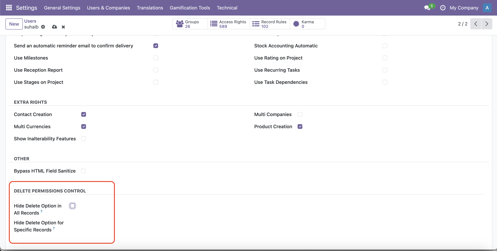
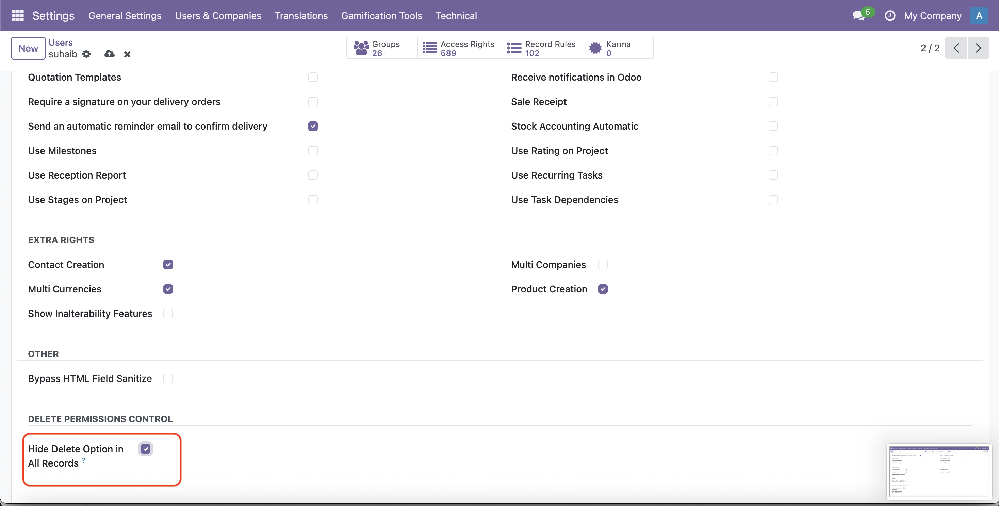
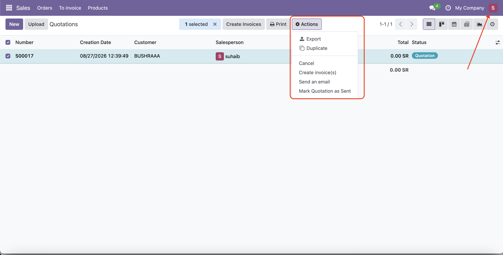
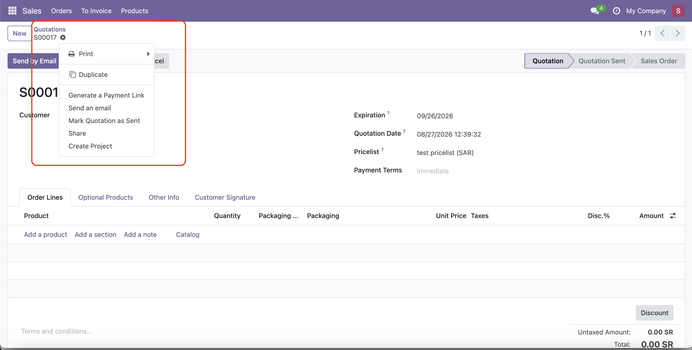

User Delete Control is an Odoo 18 module that gives administrators control over record deletion permissions on a per-user basis.
The module provides both backend protection and user interface protection, helping reduce accidental or unauthorized record deletion.
unlink().After installing the module:
Configure deletion permissions directly from the user's Access Rights.

The Delete action is hidden from List and Form views when deletion is restricted for the current user.
The module also protects the unlink() operation
at the backend level.
This means that hiding the Delete button is not the only security mechanism. Unauthorized deletion attempts through backend operations are also blocked.
When deletion is restricted, the Delete action is hidden from the user interface.


| Configuration | Result |
|---|---|
| Hide Delete Option in All Records | User cannot delete any record. |
| Restrict Contacts only | User cannot delete Contacts but can delete other allowed records. |
| Restrict Products and Contacts | User cannot delete Products or Contacts. |
| No restrictions | Normal Odoo deletion behavior. |

user_delete_control directory
inside your Odoo custom addons directory.
user_delete_control18.0.1.0.0base, webFor questions, bug reports, or feature requests, please use the GitHub repository issue tracker.
Author: Bushra Alamarnah